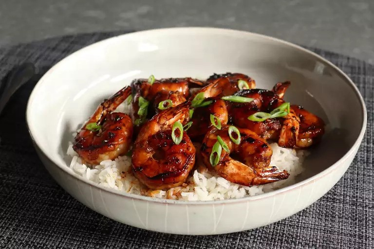

Honey-Garlic Shrimp

Description
The perfect balance of sweet and savory
while still packing a substantial garlic punch.
Infos
- Prep Time: 10 mins
- Cook Time: 5 mins
- Additional Time: 30 mins
- Total Time: 45 mins
- Servings: 2
Ingredients
- 1 pound large raw shrimp (16-20 count), peeled and deveined
- 1 tablespoon minced fresh garlic
- 2 tablespoons mild-flavored honey
- ½ teaspoon freshly grated ginger
- 1 tablespoon soy sauce, or more to taste
- 1 teaspoon Asian fish sauce, or to taste
- 2 teaspoons vegetable oil
- 1 cup thinly sliced green onion, or to taste
Preparation
- Make sure shrimp are fully thawed and well drained. Keep in the refrigerator while you make the marinade.
- Whisk garlic, honey, ginger, soy sauce, and fish sauce together in a bowl.
- Add shrimp and toss thoroughly with a spatula for 2 minutes until completely coated.
Cover with plastic wrap and marinate in the refrigerator for 30 to 60 minutes; toss occasionally while marinating.
- Brush a large nonstick skillet with oil and heat over high heat until you begin to see small wisps of smoke.
Use tongs to immediately transfer shrimp into the hot skillet in a single layer. Set excess marinade aside.
- Sear shrimp for 2 minutes, then flip over. Dump in marinade and cook for 1 minute. Turn off heat and flip shrimp once more; let sit for about 1 minute.
The marinade in the pan will reduce down to a beautiful glaze just from the residual heat in the pan. Garnish with green onion.
Links
Home
Original
Assignment